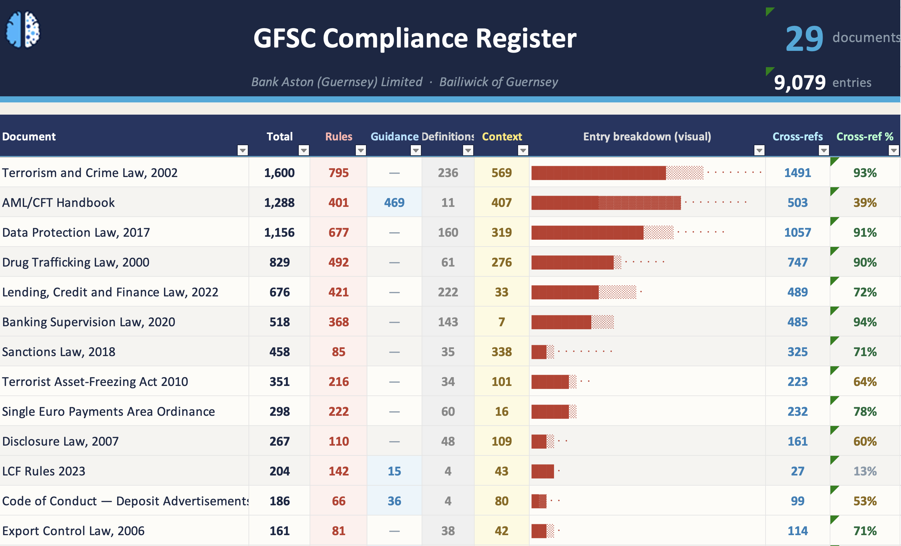

Financial services compliance requirements in the Bailiwick can be complex, multi-faceted and spread across multiple rules and regulations.
the Financial Services Register simplifies this by allowing you to select the legislation and regulation with which you are required to comply, creating a single repository of cross-referenced rules, guidance notes, definitions and statutory provisions.

↑ Hover any column to learn what it measures the FSR — identified regulatory documents, fully cross-referenced
"We strongly recommend GSY AI. Their proactive approach and strong grasp of requirements was impressive. the FSR has proved invaluable, freeing up resources and strengthening our ability to evidence compliance."
Bank Aston Limited
Each entry contains the source text, who it applies to, a priority rating, and cross-references to every related rule — everything needed to act, evidence, and audit in one row.
Rules linked to parent statutes and related entries across all documents in the FSR. Following a question to its source takes seconds, not minutes.
A thematic map across every document — CDD, sanctions, capital, outsourcing, large exposures, cyber security, data protection, and more.
Every entry carries an industry function tag, priority rating, compliance status field, evidence column, and owner — ready for an auditor or board pack.
Built-in dashboard shows counts by document, type, and priority. The summary tab gives a clean per-document breakdown for reporting.
Every document included in the FSR comes with documented reasoning for its inclusion — so your selection is defensible to auditors.
Every rule, guidance note, definition and statutory provision transcribed directly from source — no paraphrasing, no interpretation.
A short screen-share showing how the FSR is structured, how cross-references work, and how a compliance team would use it day-to-day.
Enter your details to watch the walkthrough
The FSR can remove ongoing manual processes and costs, quickly paying for itself. Pricing depends on the number of regulatory documents required. Includes a register configured for your firm, a handover call, and documented selection rationale.
Get in touch to start